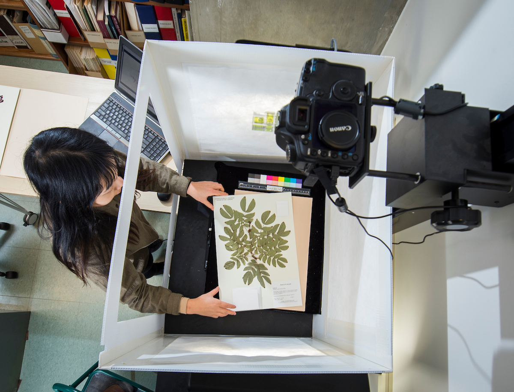

Imaging Plant Specimens Workflow Imaging Plant Specimens Protocol Specimen Imaging Quick Guide
Imaging Vascular Plant Specimens
Specimens are photographed and images are made available online. Typically, volunteers image the specimens. Images are then processed and uploaded to SEINet by the Database Associate.